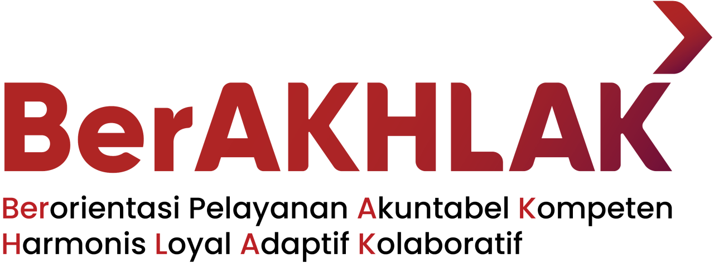
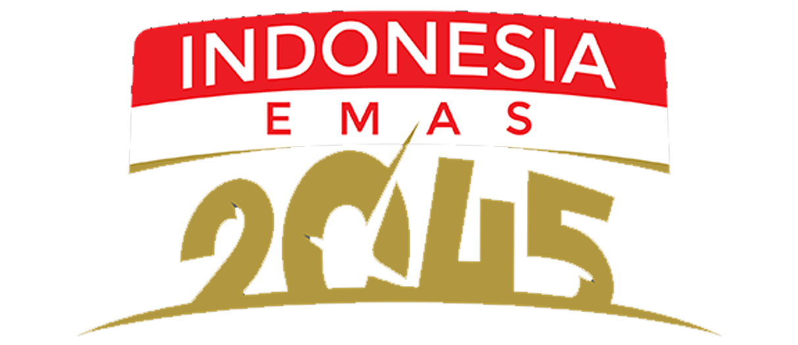
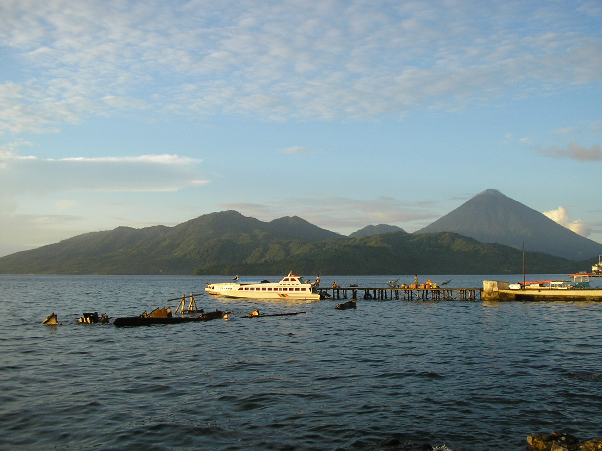

Memperkuat Keterkaitan Ekonomi dan Pemerataan Pembangunan Antarwilayah
daerah menjadi motor pertumbuhan, keduanya berbasis tambang dan hilirisasi nikel
daerah relatif tertinggal: pertumbuhan dan PDRB per kapita di bawah rata-rata provinsi
Kuadran III kosong: belum ada pusat pertumbuhan baru di luar kawasan nikel. Halmahera Tengah jauh terpisah dari daerah lain.
pertumbuhan ekonomi terkonsentrasi di Halmahera Tengah
sementara kabupaten lain masih bertumpu pada sektor pertanian, perikanan, dan jasa yang belum terhubung secara optimal dengan rantai pasok industri.
Manfaat kawasan industri belum menyebar ke kabupaten/kota lain karena rantai pasok dan kemitraan usaha lokal masih terbatas, sementara penyerapan tenaga kerja terpusat di Halmahera Tengah
Ketimpangan antarkabupaten/kota menurun bila setiap sambungan dalam rantai perubahan berjalan.
Jangan langsung menambah kegiatan. Cari bagian yang terhambat.
Periksa kesiapan proyek, minat investor, sisa kendala lahan dan perizinan, serta kesiapan infrastruktur.
Periksa kesesuaian kompetensi dengan lowongan, jumlah lulusan yang ditempatkan, dan asal pekerja yang direkrut.
Periksa pemanfaatan teknologi dan mesin baru, kapasitas produksi, dan apakah investasinya padat modal.
Periksa apakah pertumbuhan terpusat di daerah yang sudah maju dan nilai tambah bocor keluar daerah.
| Sambungan | Asumsi(syarat agar berjalan) | Risiko(jika asumsi tidak terpenuhi) | Respons(penyesuaian kegiatan) |
|---|---|---|---|
| 1. Fasilitasi investasi → PMA/PMDN meningkat | Investor berminat; kendala lahan, perizinan, dan infrastruktur dapat diselesaikan. | Proyek berhenti di tahap minat; realisasi tertunda karena lahan atau infrastruktur. | Prioritaskan lahan clean dan clear; perizinan terpadu; sinkronkan infrastruktur dengan lokasi proyek. |
| 2. Pelatihan & penempatan → TPT menurun | Kurikulum sesuai kebutuhan industri; industri mau merekrut lulusan lokal. | Lulusan tidak terserap; industri mendatangkan pekerja dari luar daerah. | Kurikulum disusun bersama industri; kesepakatan rekrutmen lokal; pemagangan berujung penempatan. |
| 3. Investasi, teknologi & tenaga kerja → PDRB per kapita tumbuh | Teknologi dan mesin baru benar-benar dipakai dan menaikkan produktivitas; investasi menyerap tenaga kerja lokal. | Teknologi tidak termanfaatkan; investasi padat modal sehingga dampaknya ke PDRB per kapita kecil. | Dampingi pemanfaatan teknologi; kaitkan pengadaan mesin dengan pelatihan operator; utamakan investasi yang menyerap tenaga kerja. |
| 4. PDRB per kapita tumbuh → ketimpangan menurun | Kabupaten/kota ber-PDRB per kapita rendah dapat tumbuh lebih cepat; nilai tambah dinikmati ekonomi lokal. | Pertumbuhan terpusat di daerah maju; industri tidak terhubung dengan ekonomi lokal; ketimpangan melebar. | Target sebaran investasi per kabupaten/kota; keterkaitan dengan UMKM dan pemasok lokal; pantau Indeks Williamson. |

Menurunnya ketimpangan ekonomi antarkabupaten/kota di Provinsi Maluku Utara
Laju pertumbuhan PDRB Maluku Utara ditargetkan meningkat dari 30,16 persen menjadi 36,40 persen pada tahun 2029
BPS Maluku Utara
PDRB riil per kapita daerah sasaran yang di bawah rata-rata provinsi tumbuh lebih cepat daripada provinsi.
Meningkatnya pertumbuhan PDRB perkapita kabupaten/kota di Maluku Utara
1. PDRB per kapita ditargetkan naik dari Rp98,4 juta pada tahun 2025 menjadi Rp112,40 juta pada tahun 2029
2. Proporsi peningkatan PDRB per kapita di kabupaten/kota tertinggal (di luar Kabupaten Halmahera Tengah) meningkat sebesar 50 persen
BPS Maluku Utara
Konsumsi rumah tangga tumbuh dan investasi terealisasi, sehingga kegiatan ekonomi daerah berkembang.
1. Meningkatnya realisasi investasi PMA/PMDN di Provinsi Maluku Utara
2. Menurunnya Tingkat Pengangguran Terbuka (TPT) kabupaten/kota di Provinsi Maluku Utara
1. Realisasi investasi PMA/PMDN ditargetkan meningkat menjadi Rp100 triliun pada tahun 2029 dari Rp90,7 triliun pada tahun 2025.
2. Realisasi investasi PMA/PMDN pada sektor unggulan (pertanian, perikanan, dan jasa) ditargetkan meningkat dari Rp0,42 triliun pada tahun 2025 menjadi Rp3 triliun pada tahun 2029.
3. Tingkat pengangguran terbuka (TPT) di kabupaten/kota tertinggal di Provinsi Maluku Utara ditargetkan turun sebesar 1 persen setiap tahun.
BKPM/DPMPTSP dan Sakernas.
Proyek beroperasi dengan dukungan infrastruktur dan faktor produksi. Perusahaan merekrut pekerja sesuai kompetensi. TPT turun karena penyerapan kerja.
1. Penyusunan pemetaan potensi unggulan daerah dan penyiapan proyek investasi industri pengolahan yang siap ditawarkan kepada investor
2. Fasilitasi percepatan realisasi investasi melalui promosi dan business matching, pendampingan perizinan, serta penyelesaian kendala lahan dan infrastruktur.
3. Pelatihan tenaga kerja berbasis kebutuhan industri, dilanjutkan dengan sertifikasi kompetensi dan fasilitasi penempatan tenaga kerja lokal
1. Jumlah proyek investasi yang memperoleh fasilitasi (proyek)
2. Jumlah pekerja lokal dari daerah terluar yang terserap di kawasan industri (KI) dan peserta pelatihan yang bersertifikat (orang)
1. Laporan fasilitasi
2. Disnaker/BLK: peserta, sertifikat, dan laporan penempatan.
Data potensi akurat, pemerintah berkomitmen, dan investor berminat. Anggaran serta instruktur tersedia. Pencari kerja dan perusahaan berpartisipasi.
| MASALAH | SIGNIFIKANSI MASALAH · 5 KRITERIA | RERATA SIGNIFIKANSI | KELAYAKAN PENANGANAN · 3 KRITERIA | RERATA KELAYAKAN | ||||||
|---|---|---|---|---|---|---|---|---|---|---|
| Besaran masalah | Urgensi | Pihak terdampak | Dampak pembangunan | Prioritas nasional | Feasibility | Kewenangan | Sumber daya | |||
| ✔ A. Struktur ekonomi antarwilayah belum seimbang (investasi & industri bernilai tambah tinggi terkonsentrasi di Halmahera Tengah) | 5 | 5 | 5 | 5 | 4 | 4,80 | 4 | 3 | 3 | 3,33 |
| B. Lemahnya keterkaitan kawasan industri di Halmahera Tengah dengan kabupaten lain | 4 | 4 | 4 | 5 | 4 | 4,20 | 4 | 3 | 3 | 3,33 |
| Alternatif | Efektivitas(50%) | Efisiensi(10%) | Risiko Terkendali(10%) | Kelayakan(15%) | Koordinasi(15%) | Skor |
|---|---|---|---|---|---|---|
| ✔ Fasilitasi percepatan investasi | 4 | 5 | 3 | 4 | 5 | 4,2 |
| Fasilitasi pengadaan teknologi inti/maju dan restrukturisasi | 3 | 4 | 4 | 4 | 5 | 4,0 |
| Pelatihan dan sertifikasi tenaga kerja | 3 | 3 | 4 | 4 | 4 | 3,6 |
| Kementerian / Lembaga | Peran | Potensi kontribusi |
|---|---|---|
| Kementerian Investasi dan Hilirisasi/BKPM | Koordinator fasilitasi investasi | Penyiapan proyek, promosi, business matching, layanan OSS, dan pengawalan realisasi investasi. |
| Kementerian Perindustrian | Pengembangan industri pengolahan | Penilaian peluang industri, kebutuhan teknologi, dan kemitraan rantai pasok dengan usaha lokal. |
| Kementerian ATR/BPN | Kepastian tata ruang dan pertanahan | Verifikasi kesesuaian lokasi, dukungan RDTR, dan fasilitasi penyelesaian persoalan pertanahan. |
| Kementerian Lingkungan Hidup/BPLH | Pemenuhan persyaratan lingkungan | Pendampingan dokumen dan pemrosesan persetujuan lingkungan sesuai kewenangan. |
| Kementerian PU, Kementerian Perhubungan, Kementerian ESDM | Dukungan infrastruktur, logistik, dan energi | Koordinasi jalan akses, air, transportasi, dan pasokan energi bersama pemda serta penyedia layanan. |
| Pemprov dan pemkab/pemkot: DPMPTSP, Bappeda, dinas teknis | Pelaksana fasilitasi di daerah | Validasi potensi dan lokasi, pendampingan investor, serta penyelesaian kendala proyek di lapangan. |
| Intervensi | RPJMN 2025–2029 | RPJMD Malut 2025–2029 | Program K/L dan perangkat daerah |
|---|---|---|---|
| 2a.Promosi dan business matching | PN 5 AK 4: investasi swasta prioritas; AK 2: kemitraan usaha dan rantai pasok kawasan industri | Misi 4: efektivitas promosi penanaman modal; Program Promosi dan Kerja Sama Penanaman Modal | Kementerian Investasi dan Hilirisasi/BKPM; Kemenperin; DPMPTSP Provinsi |
| 2b.Pendampingan perizinan | PN 5 AK 2: fasilitasi perizinan kawasan; AK 4: kepastian berusaha dan kemudahan investasi | Perizinan berusaha berbasis risiko; Program Pelayanan Penanaman Modal; Pengendalian Izin Usaha Industri | BKPM (OSS RBA); DPMPTSP Provinsi dan Kab/Kota; Perindustrian |
| 2c.Penyelesaian kendala lahan | PN 5 AK 2: tata ruang kawasan; PP 20/2024 Perwilayahan Industri | Urusan Pertanahan: Program Pengadaan Tanah untuk Kepentingan Umum | Kementerian ATR/BPN; PD Pertanahan dan Penataan Ruang |
| 2d.Dukungan infrastruktur | PN 5 AK 2: sarpras dalam dan luar kawasan; AK 3: backbone logistik | Program Penyelenggaraan Jalan; Misi 2: pelabuhan perikanan dan sentra industri | Kementerian PU, Kemenhub; Dinas PUPR dan Perhubungan Provinsi |
Mewujudkan Pertumbuhan Ekonomi Maluku Utara yang Inklusif, Berkeadilan, dan Berkelanjutan
“Ketimpangan menurun ketika investasi tidak lagi menumpuk di kawasan nikel, tetapi tumbuh di kabupaten/kota tertinggal dan terserap oleh tenaga kerja lokal.”
Materi, data, dan dokumen pendukung presentasi Disparitas Ekonomi Antarwilayah di Provinsi Maluku Utara dapat diakses melalui tautan resmi Bappenas.
link.bappenas.go.id/DDPP-UI3-A4